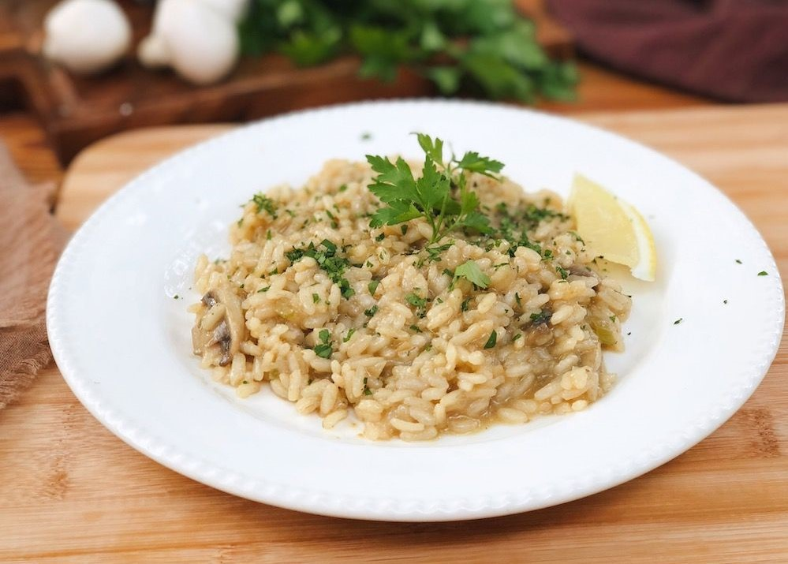

Uma entrada apetitosa que todos vão Amar!

Ingredientes:
- 1 xícara de arroz branco cateto ou grão curto
- 2 colheres de sopa de azeite de oliva
- 1 xícara de cebola picada
- 1 xícara de berinjela picada
- 1 xícara de vagem picada
- 1 xícara de abobrinha italiana picada
- 1 xícara de cenoura picada
- 1 colher de chá de acafrão da terra
- 1 colher de chá de sal
- 3 xícaras de água (720 mililitros)
- 1 colher de sopa de orégano fresco
Todos os direitos reservados © Victor Varjão - Théo Alves - Sara Duarte